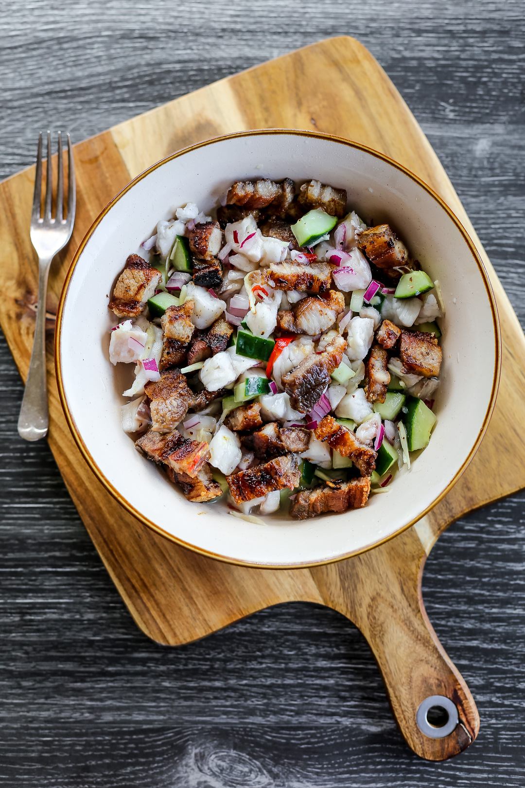

Home
Sinuglaw

Description
Sinuglaw is a dish composed of grilled pork belly and fish ceviche. This can be considered as a main dish or an appetizer. Jump to Recipe.
Ingredients
- 1 lb Inihaw na liempo (grilled pork belly, chopped)
- 1 lb fresh tuna meat cubed
- 2 cups cucumber seeded and thinly sliced
- 1 1/4 cup vinegar cane, white, or coconut vinegar
- 1 medium sized red onion sliced
- 2 tablespoons ginger julienned
- 4 pieces finger chilies sliced
- 1 piece lemon
- 4 to 6 pieces Thai or Bird’s eye chili chopped
- 1 teaspoon salt
Steps in making the dish
- Preparing the Tuna Base
- Combining Spices and Seasonings
- Adding Citrus and Final Vinegar Marinade
- Incorporating the Grilled Pork